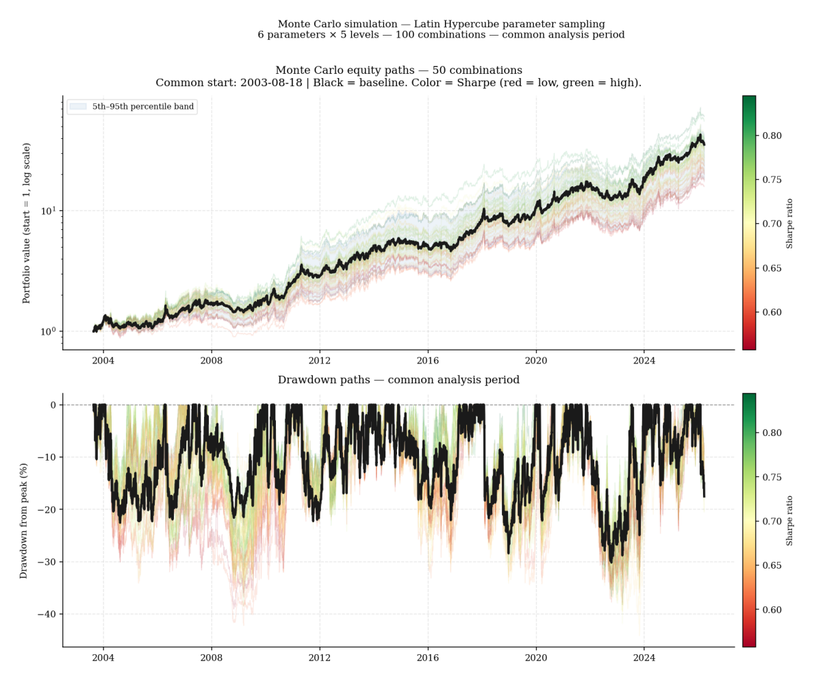
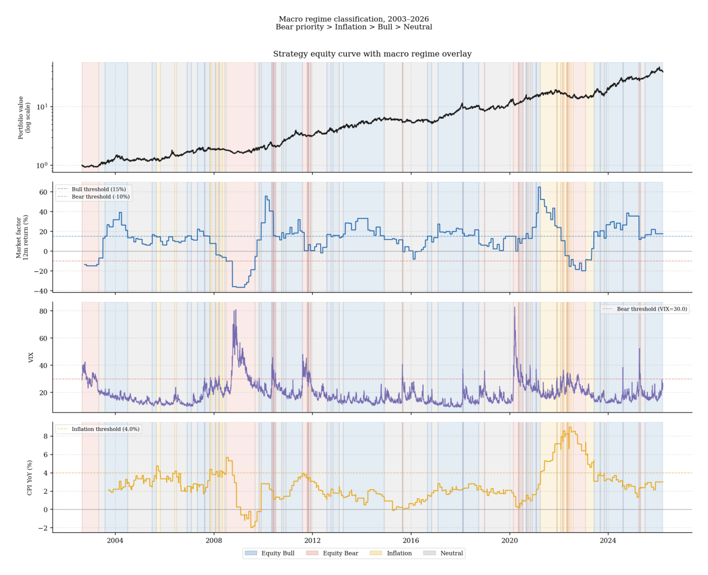
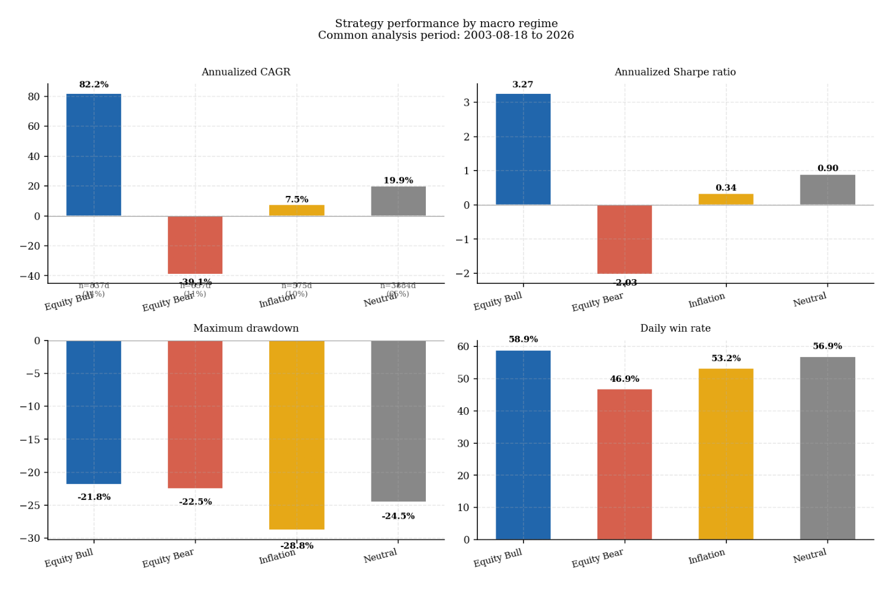

7. ES Core Relative Allocation: implementation and evidence
The preceding six sections built a framework for evaluating investment return sources, constructing portfolios, and assessing whether active programs justify their place alongside a passive core. This section applies that framework to a specific systematic strategy — the ES Core Relative Allocation — documenting its instrument universe, design rationale, robustness evidence, and early live track record on Darwinex Zero.
Instrument universe and core design
The strategy trades six futures contracts: ES (S&P 500), NQ (Nasdaq-100), RTY (Russell 2000), GC (Gold), SI (Silver), and ZN (10-year Treasury). All six are USD-denominated and trade on regulated U.S. exchanges.
The primary constraint shaping the universe is the Darwinex Zero platform, which is the live deployment environment. Darwinex Zero provides access to a $1 million account with investor capital at stake. Futures contracts carry large notional values, and the set of instruments practically tradeable within this infrastructure at the required position sizes is the binding constraint on universe construction. All contracts must be USD-denominated — mixing currency exposures would introduce a foreign exchange risk layer that is not part of the strategy’s design intent.
Within those constraints, the universe was built around one organizing principle: each instrument should represent a distinct economic exposure that belongs in a considered long-term portfolio allocation. Short-term interest rate futures and commodity sub-sector contracts were excluded not primarily on liquidity grounds but because they do not satisfy this criterion. Short-term rate futures express views on monetary policy timing rather than long-run risk premia. Commodity sub-sector contracts introduce roll costs and seasonal dynamics that require specialist management and are better suited to dedicated commodity programs than to a multi-asset long-term allocation framework.
The three equity contracts each represent a meaningfully different segment of the U.S. economy. ES provides exposure to the broad U.S. equity market — large and mid-cap businesses across all sectors, weighted by market capitalization. NQ concentrates exposure in the Nasdaq-100, which is heavily weighted toward technology, software, semiconductors, and other innovation-driven businesses with long-duration earnings profiles. RTY provides exposure to U.S. small-cap domestically oriented businesses whose returns are more sensitive to domestic economic conditions and less correlated with global growth cycles than large-cap indices. Gold and silver provide real asset exposure — stores of value whose behavior differs from financial assets, particularly during inflation and currency stress episodes. The ten-year Treasury provides duration — long-dated fixed income exposure that has historically served as a diversifier during equity stress in disinflationary regimes.
A global equity futures contract would have been a natural addition to this universe — replacing ES as the core would have broadened geographic diversification and reduced the strategy’s dependence on U.S. equity specifically. This remains a design priority, but global equity futures are not currently available within the Darwinex Zero platform infrastructure.
Why ES is the core. ES maintains its role as the strategy’s permanent core for three reasons. First, U.S. large-cap equity has been the most reliably positive long-run risk premium available to investors — the equity risk premium is the foundation on which every other return source in the universe is measured. Second, ES is the benchmark against which every alternative’s relative performance is evaluated: the strategy’s allocation signal measures how consistently each alternative is outperforming the equity core on a risk-adjusted basis, which requires a stable and liquid reference instrument. Third, the permanent equity core ensures the strategy participates in the growth regime that historically accounts for the majority of compounded long-run return. The design accepts bear market drawdowns as the necessary cost of sustained equity participation — the objective is strong long-run compounding, not avoidance of short-term equity volatility.
Strategy design and the role of leverage
The ES Core Relative Allocation is a systematic multi-asset futures strategy. It maintains a permanent allocation to ES as the equity core and dynamically allocates up to 50 percent of the portfolio to the five alternative instruments based on their risk-adjusted performance relative to ES.
The allocation process operates at daily frequency. The signal evaluates each instrument’s recent risk-adjusted performance history and determines both the size of each position and the proportion of the portfolio it receives. Strong-performing alternatives receive larger allocations; weak-performing alternatives are reduced toward zero. The ES core always holds the residual weight — ensuring net long equity exposure at all times. Allocations are smoothed to reduce unnecessary turnover, and a no-trade band prevents rebalancing when signal changes are small relative to the existing position.
The strategy incorporates a dynamic volatility targeting mechanism. Position sizes are scaled in proportion to recent measured downside volatility, so that each instrument contributes a roughly consistent level of realized risk to the portfolio regardless of its current volatility regime. When an instrument becomes more volatile its position size is reduced; when it becomes less volatile the position expands. This mechanism ensures that the strategy’s overall risk profile remains relatively stable across different market conditions rather than expanding uncontrolled during volatile periods.
Leverage is not an optional feature of this strategy — it is structurally necessary. Futures contracts require margin rather than full capital, and the strategy’s volatility targeting mechanism systematically determines how much notional exposure each dollar of capital should support. In high-conviction, low-volatility environments the strategy runs above 1x notional leverage; in uncertain or high-volatility environments it contracts toward or below 1x. The objective of this dynamic leverage is not to maximize return at any given moment but to maintain a consistent risk profile across changing conditions. Investors who expect the strategy to behave like an unlevered equity allocation are misunderstanding its design — it is a levered, dynamically sized futures program whose long-run return is the product of sustained participation in multiple risk premia, not a single static equity position.
Specific signal parameters are not disclosed here. Publishing the exact parameters would accelerate their decay as similar strategies adopted the same values — the adaptive markets logic from section 2 applies directly. What the strategy does is described at the level of its observable design: daily signal evaluation, dynamic volatility targeting, and IR-based tactical rotation across six futures instruments with a permanent ES core.
Backtest results
The strategy was backtested from 2002 to March 2026 using Yahoo Finance continuous futures data. All signals are lagged one day to prevent look-ahead bias. The common analysis start date is 2003-08-18, reflecting the warm-up period required for the longest signal windows to initialize.
| Metric | Strategy | ES benchmark | ES-only (levered) |
|---|---|---|---|
| Total return | 3,699% | 601% | 2,250% |
| CAGR | 16.8% | 8.6% | 14.3% |
| Ann. volatility | 22.3% | 19.0% | 23.4% |
| Sharpe ratio | 0.807 | 0.530 | 0.689 |
| Sortino ratio | 1.095 | 0.745 | 0.936 |
| Max drawdown | −30.2% | −57.1% | −42.4% |
The strategy produces a Sharpe of 0.807 and Sortino of 1.095 over the full backtest period, compared to 0.530 and 0.745 for the ES buy-and-hold benchmark. The maximum drawdown of −30.2% compares favorably to −57.1% for the benchmark and −42.4% for the levered ES-only alternative.
The comparison against the levered ES-only alternative is the more informative benchmark. It isolates the contribution of tactical allocation: the ES-only levered alternative applies the same dynamic leverage but holds only ES, producing a CAGR of 14.3% and Sharpe of 0.689. The additional 2.5 percentage points of CAGR and 0.118 Sharpe points above that baseline reflect the value of rotating across the alternative instruments rather than concentrating in a single equity contract.
Parameter robustness
A strategy that performs well only at its exact design parameters is not a robust investment program but a result specific to one set of choices. Two complementary analyses test whether this strategy holds beyond its baseline configuration.
A one-at-a-time sensitivity analysis tested each of the six key design parameters across five values ranging from −50% to +50% of the baseline. The strategy’s Sharpe ratio remained above 0.75 for four of the six parameters across the full tested range. Two parameters — the EMA smoothing span and the no-trade band — showed essentially no sensitivity, meaning those choices can be varied substantially without affecting performance. The most sensitive parameter was the signal lookback window, which showed a clear directional pattern: shorter windows consistently outperformed longer ones.
The Monte Carlo analysis then tested 50 randomly sampled combinations across the full six-dimensional parameter space simultaneously, evaluated over a common analysis start date to ensure fair comparison. The Sharpe threshold of 0.70 was chosen as a conservative minimum — it represents a level at which the strategy would still produce meaningful risk-adjusted return well above the passive equity benchmark’s Sharpe of 0.53, justifying the operational complexity of a futures-based program. 52% of combinations exceeded this threshold, and the baseline configuration sat at the 98th percentile of the distribution.
The most important robustness finding is the dominant sensitivity to the signal lookback window — correlation of −0.77 between window length and Sharpe across the Monte Carlo sample. This is the parameter where the current baseline may not be optimal, and a shorter window is a candidate for future revision once the live deployment provides sufficient out-of-sample evidence.

Regime decomposition
The strategy’s performance varies substantially across macro regimes. Each trading day in the backtest is classified into one of four regimes using publicly available FRED data: Equity Bear (trailing 12-month S&P 500 return below −10% or VIX above 30, taking priority over all other conditions), Inflation (CPI year-on-year above 4% and rising), Equity Bull (trailing 12-month return above 15%), and Neutral (all remaining days). The priority ordering ensures that bear conditions are correctly identified even when they coincide with elevated inflation.

| Regime | Days | % Sample | CAGR | Sharpe | Max DD | Win rate |
|---|---|---|---|---|---|---|
| Equity Bull | 837 | 14.1% | +82.2% | 3.27 | −21.8% | 58.9% |
| Equity Bear | 657 | 11.0% | −39.1% | −2.03 | −22.5% | 46.9% |
| Inflation | 575 | 9.7% | +7.5% | 0.34 | −28.8% | 53.2% |
| Neutral | 3884 | 65.2% | +19.9% | 0.90 | −24.5% | 56.9% |
The strategy earns its return across two complementary regimes. The Neutral regime — 65% of all trading days — produces a Sharpe of 0.90 and a CAGR of 19.9%, forming the backbone of compounded long-run performance. Equity Bull periods produce an exceptional Sharpe of 3.27 as the dynamic leverage mechanism amplifies equity participation during strong trending conditions. Together these two regimes account for 79% of the sample and all positive contribution.
The Equity Bear regime is the strategy’s primary structural weakness. During the 657 bear-regime days the strategy lost at an annualized rate of −39.1% with a Sharpe of −2.03. This is a direct consequence of the backward-looking signal design: the allocation mechanism requires sustained relative underperformance before it reduces equity exposure materially. In sharp, rapid bear markets — the 2020 COVID episode is the clearest example — the strategy experiences full equity drawdown before the signal has time to rotate. This is not a parameter optimization problem. It is a structural feature of any signal that measures performance over a multi-month lookback window. An investor in this strategy must accept that bear market losses are the price of sustained equity participation across the 79% of conditions when the strategy is designed to perform.

The Inflation regime produces a mediocre 7.5% CAGR and 0.34 Sharpe. The strategy has no explicit inflation protection mechanism — gold allocation during inflation periods reflects only the signal’s backward-looking relative performance assessment of gold versus ES, which may lag actual inflation dynamics by several months. This is a known design gap that a future revision incorporating a more explicit inflation signal could address.
Return sources
The strategy’s return comes from three sources.
The dominant source is equity market exposure. The strategy maintains permanent net long equity through its ES core, and this exposure to the equity risk premium is the foundation of its long-run return. This is structural beta, not alpha — it is the return available to any investor with sustained equity participation.
The second source is real asset exposure through gold and silver. Rolling factor attribution shows the strategy carries a meaningful and persistent gold beta throughout the backtest period. This reflects the allocation signal’s tendency to rotate toward gold during equity stress and late-cycle environments when gold outperforms ES on a risk-adjusted basis over the measurement window.
The third source is the dynamic allocation signal itself — the incremental return above a static long equity and gold position. Full-sample analysis estimates this contribution at approximately 6 percentage points of annualized return with a t-statistic that is meaningful but not conclusive given the backtest length. This is the component that requires ongoing validation in live deployment, and it is the component that cannot be fully attributed to known systematic factors.
The strategy is a leveraged equity program with a real asset overlay and a tactical rotation mechanism. Its market exposure is dynamic — averaging approximately 1.25 times the equity market across the backtest, rising above 2.0 during high-conviction trending environments and contracting toward 0.2 during weak or uncertain signal periods. It is not a market-neutral or low-beta program, and should not be evaluated as one.
Live deployment
The ES Core Relative Allocation has been deployed live on Darwinex Zero under the ticker UJNU since 5 March 2026. The live track record is available at https://www.darwinexzero.com/darwin/UJNU/performance.
Two versions of the performance are visible on the platform. The first is the underlying strategy’s own return — driven entirely by the signal logic and the dynamic volatility targeting described above. The second is the DARWIN index return, which reflects Darwinex Zero’s VaR normalization filter. This filter standardizes the published track record to a target monthly VaR of 6.5%, scaling the strategy’s returns up or down depending on how far its actual volatility diverges from that target. The two series will differ whenever the strategy is running at volatility levels materially above or below the platform target.
For investors evaluating the strategy, the underlying return series is the relevant measure of the signal’s performance. The DARWIN return is the relevant measure for investors considering an allocation through the Darwinex Zero vehicle specifically. Direct replication of the underlying strategy outside of Darwinex Zero would require a regulated fund structure — futures accounts, leverage facilities, and the operational infrastructure to execute daily signals across six instruments. For individual investors, Darwinex Zero is currently the only accessible vehicle for participating in the strategy’s performance.
At the time of writing the live track record is approximately eight weeks old — insufficient for any statistical inference about performance quality. What it confirms is that the implementation is functioning as designed across all six instruments. The appropriate evaluation horizon for drawing meaningful conclusions is a minimum of 24 months of live trading across at least two distinct macro regimes. The regime classification framework in the section above provides the diagnostic lens for interpreting that performance as it accumulates — bear market performance should be evaluated against the structural expectation of drawdown, not against the bull and neutral regime standards where the strategy is designed to outperform.
The framework applied
Every design decision in the ES Core Relative Allocation traces directly to a specific section of this framework. The return source taxonomy from section 3 explains what the strategy harvests. The portfolio construction principles from section 4 explain how exposures are sized and combined. The expected return framework from section 5 explains how to evaluate whether current conditions justify the positions. The cost hierarchy from section 6 explains where the strategy sits in a broader portfolio — as a justified active program alongside a passive core, not as a replacement for one.
That connection is what distinguishes a documented investment process from a backtest report. The standards are stated in advance. The evidence is presented honestly. The gaps are acknowledged. What remains is the live record.